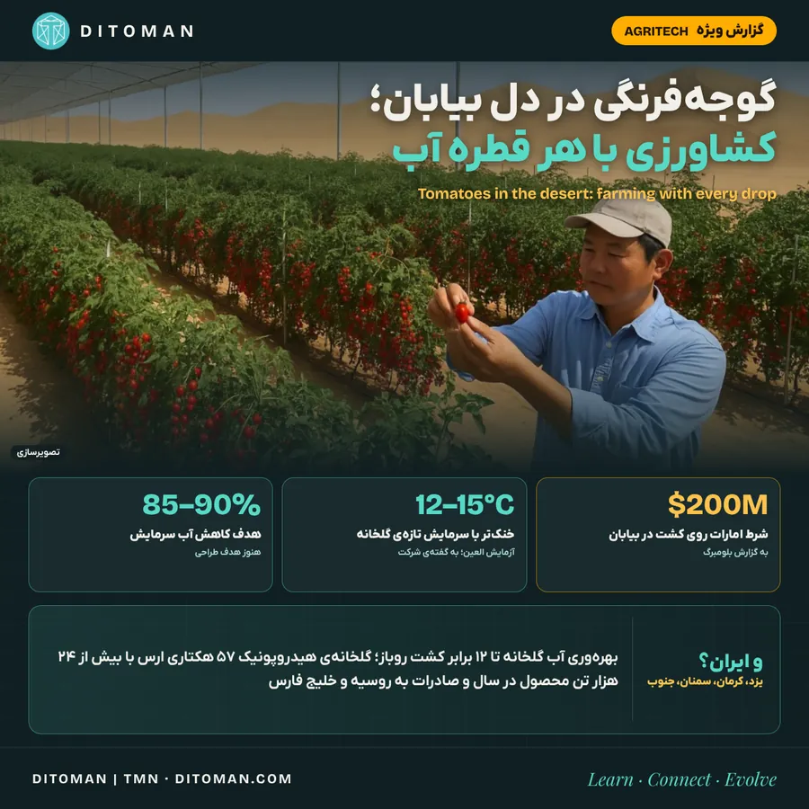
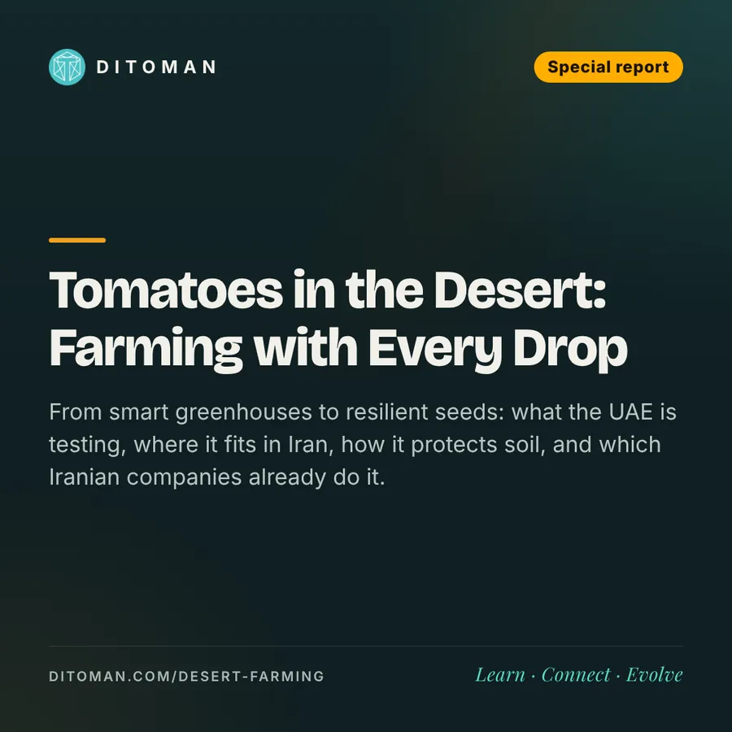
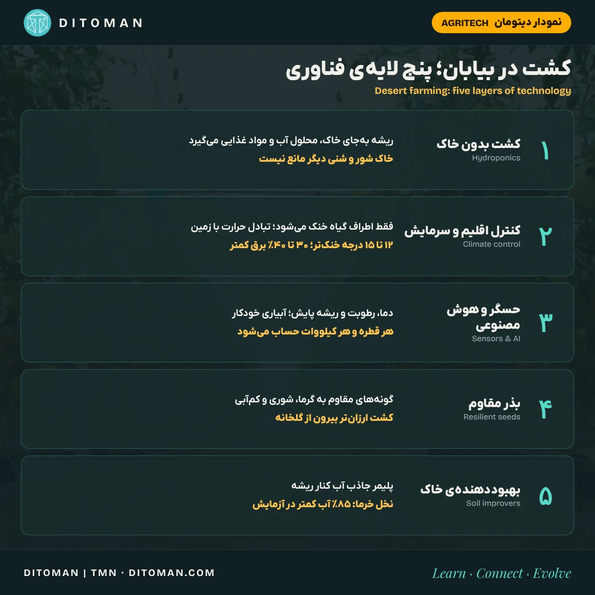
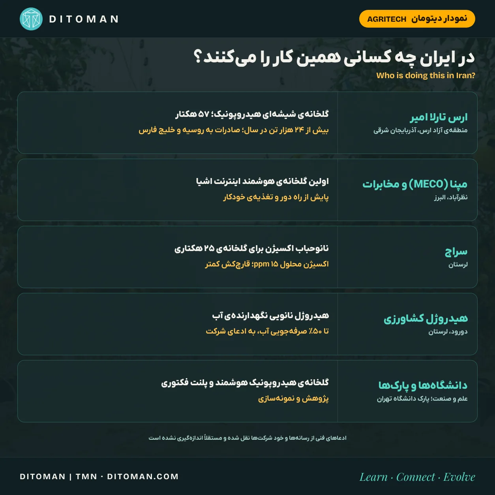

گوجهفرنگی در دل بیابان؛ فناوری چگونه مرزهای کشاورزی را جابهجا میکند؟
Tomatoes in the desert: how technology is moving farming's frontiers
از گلخانههای هوشمند تا بذرهای مقاوم؛ امارات چه آزمایش میکند، کدام مناطق ایران از آن سود میبرند، چطور از خاک محافظت میشود و کدام شرکتهای ایرانی همین حالا این کار را میکنند.
From smart greenhouses to resilient seeds: what the UAE is testing, where it fits in Iran, how it protects soil, and which Iranian companies already do it.
در یک نگاه
در سرزمینی که باران کم میبارد، خاک شنی است و گرمای تابستان به حدود ۵۰ درجه میرسد، امارات دارد آزمایش میکند که آیا میشود گوجهفرنگی، خیار، بادمجان و توت را با آب و برق کمتر در بیابان پرورش داد. بلومبرگ ۱۷ نوامبر ۲۰۲۶ این تلاش را «شرطی ۲۰۰ میلیون دلاری» توصیف کرد (بلومبرگ).
| شاخص | رقم |
|---|---|
| وابستگی امارات به واردات غذا | حدود ۸۰ تا ۹۰٪ |
| هدف ابوظبی تا ۲۰۴۰ | تولید ۷۰٪ غذای پایه در داخل؛ امروز حدود ۳۰٪ |
| هدف مصرف آب مزرعه | از ۲۴٫۷ به ۱۲٫۷ هزار مترمکعب در هکتار در سال |
| مرکز تحقیقاتی «واحهی نوآوری» سیلال | ۳۴ هکتار، العین؛ افتتاح آوریل ۲۰۲۵ |
| کاهش دمای سرمایش تازه (آزمایش) | ۱۲ تا ۱۵ درجه |
| هدف کاهش آب سرمایش | ۸۵ تا ۹۰٪؛ هنوز هدف طراحی است |
ارقام شرکتها «ادعا» یا «هدف»اند، نه نتیجهی حسابرسی مستقل. این گزارش آنها را جدا از دادههای رسمی آورده است.
1. حتی با باران خوب امسال، چرا ایران باید به آب فکر کند؟
امسال خدا را شکر بارشها در ایران خوب بوده و پیشبینیهای هواشناسی هم از پاییزی پربارشتر از نرمال خبر میدهند. اما یک سال پرباران، کمبود چند دهه را جبران نمیکند.
- جغرافیا: بیشتر خاک ایران خشک و نیمهخشک است و میانگین بارش کشور حدود یکسوم میانگین جهانی است. ایران در کمربند بیابانی جهان قرار دارد، همان کمربندی که امارات هم در آن است
- آبخوانهای خالی: آب زیرزمینی که طی چند دهه برداشت شده، با یک یا دو زمستان پرباران دوباره پر نمیشود. فرونشست زمین در بسیاری از دشتها هنوز ادامه دارد
- گرم شدن کرهی زمین: هوای گرمتر یعنی تبخیر بیشتر از سدها، خاک و مزرعه. بارشها نامنظمتر و شدیدتر میشوند: سیل و خشکسالی میتوانند پشت سر هم بیایند، و آبی که با سیل میآید، اغلب به سفرههای زیرزمینی نمیرسد
- نیاز رو به رشد: جمعیت و نیاز غذایی بیشتر میشود، اما آب در دسترس بیشتر نمیشود
- بهترین زمان برای تصمیم: سال پرباران، زمانی است که فشار کمتر است و میشود با آرامش برنامهریزی و سرمایهگذاری کرد؛ نه در اوج بحران
سالهای پرباران، فرصت آماده شدن برای سالهای کمباراناند.
1.1. ماجرا چیست و چرا حالا؟
- شرط ۲۰۰ میلیون دلاری: بلومبرگ گزارش داده که سیلال، شرکت غذایی متعلق به صندوق دولتی ADQ ابوظبی، فناوریهای کشت در بیابان را در العین آزمایش میکند. جزئیات مالی پروژه در متن کامل بلومبرگ است و ما فقط عنوان آن را تأیید کردهایم
- چرا حالا؟
امارات ۸۰ تا ۹۰٪ غذایش را وارد میکند و حدود ۷۰٪ واردات غذای خلیج فارس از تنگهی هرمز میگذرد. توقف کشتیرانی در هرمز در مارس ۲۰۲۶، امنیت غذایی را از یک برنامهی بلندمدت به یک فوریت تبدیل کرد (Enterprise)
- راهبرد تازهی ابوظبی (اکتبر ۲۰۲۶): تولید ۷۰٪ ۲۵ قلم غذای پایه در داخل تا ۲۰۴۰، نصف کردن مصرف آب هر هکتار مزرعه، و رساندن ارزش اقتصادی کشاورزی از ۹٫۵ به ۳۴٫۶ میلیارد درهم
2. فناوری، لایه به لایه

این یک اختراع واحد نیست؛ پنج فناوری است که باید با هم کار کنند:
| لایه | چه میکند | چرا در بیابان مهم است |
|---|---|---|
| کشت بدون خاک (هیدروپونیک) | ریشه بهجای خاک، محلول آب و مواد غذایی میگیرد؛ گاهی در بستر کوکوپیت یا پشم سنگ | خاک شور و شنی دیگر مانع نیست؛ آب و کود دقیقتر مصرف میشود |
| کنترل اقلیم و سرمایش | دما، رطوبت و جریان هوا تنظیم میشود | بزرگترین هزینهی گلخانه در بیابان، سرمایش تابستان است |
| حسگر و هوش مصنوعی | دما، رطوبت و وضعیت ریشه ثبت و آبیاری خودکار میشود | هر قطره آب و هر کیلووات برق حساب میشود |
| بذر مقاوم | گونههایی که گرما، شوری و کمآبی را بهتر تحمل میکنند | کشت را از گلخانهی گران به فضای ارزانتر هم میبرد |
| بهبوددهندهی خاک | پلیمرهای جاذب آب که رطوبت را کنار ریشه نگه میدارند | در خاک شنی، تا ۹۰٪ آب از دست میرود |
3. سه آزمایش تازه در العین
۱. واحهی نوآوری سیلال (Silal)
- مرکز تحقیقاتی ۳۴ هکتاری، معادل ۳۴۰ هزار مترمربع؛ گلخانه، زمین آزمایشی روباز و آزمایشگاه گیاه
- تفاوتش با مزرعهی معمولی: چند فناوری را در شرایط یکسان کنار هم میسنجد تا معلوم شود کدام واقعاً آب، برق و هزینهی کمتری دارد
- در دسامبر ۲۰۲۵ با شرکت آمریکایی Square Roots برای کشت داخل ساختمان با هوش مصنوعی همکاری کرد؛ هدف، گیاهانی که با نور کمتر رشد کنند و تا ۴۰٪ برق کمتری بخواهند. این عدد هدف پژوهشی است (Silal)
۲. گلخانهی «چندمنطقهای» CRETA (Fast Company خاورمیانه، ۱۰ نوامبر ۲۰۲۶)
- ایده: بهجای خنک کردن کل گلخانه، فقط اطراف گیاه خنک میشود؛ با پوستهی دولایه، تبادل حرارت با زمین زیر گلخانه، مسیرهای مهندسیشدهی هوا و کاهش گرمای خورشید
- آزمایش: گلخانهی ۵۲۰ مترمربعی در گرمای نزدیک ۵۰ درجهی العین؛ کاهش دمای هوا ۱۲ تا ۱۵ درجه و برق سرمایش ۳۰ تا ۴۰٪ کمتر، به گفتهی شرکت
- هدف: ۸۵ تا ۹۰٪ آب کمتر برای سرمایش نسبت به سیستم پد و فن معمولی؛ هنوز نتیجهی نهایی نیست
- هزینه: نصب حدود ۲۰ تا ۳۰٪ گرانتر از سیستم معمولی؛ با عمر بیش از ۲۰ سال برای بخش زیرزمینی
۳. بهبوددهندهی خاک Raincatcher
- مادهای زیستتخریبپذیر از پلیمر جاذب آب و پتاسیم که کنار ریشه تزریق میشود و وقتی خاک خشک شد، رطوبت پس میدهد
- در آزمایش روی ۲۷ نخل خرما، آبیاری از روزانه به هفتگی رسید؛ ۸۵٪ صرفهجویی آب. در ذرت شیرین واحهی سیلال، ۲۰ تا ۲۵٪ صرفهجویی
- هزینهی سالانه حدود ۷ دلار برای هر نخل و ۶۰۰ دلار برای هر هکتار محصول زراعی؛ اثرش یک تا سه فصل میماند
4. موفقیت علمی با موفقیت اقتصادی یکی نیست
- برق: سرمایش گلخانه در تابستان بیابان پرهزینهترین بخش است؛ اگر برق گران یا قطع شود، کل مدل به خطر میافتد
- سرمایهی اولیه: گلخانهی شیشهای هیدروپونیک بسیار گرانتر از کشت روباز است
- قیمت تمامشده: گوجهی گلخانهی بیابانی باید با گوجهی وارداتی رقابت کند
- مهارت: این سیستمها نیروی متخصص، نگهداری دائم و قطعات یدکی میخواهند
- پرسش اصلی: با هر مترمکعب آب و هر کیلووات برق، چند کیلو غذا و چقدر درآمد تولید میشود؟
5. ایران؛ کجا و چقدر به کار میآید؟
ایران از نظر اقلیم شباهت زیادی به امارات دارد و بیشتر آب کشور، طبق برآوردهای رسمی رایج حدود ۹۰٪، در کشاورزی مصرف میشود. برای همین، هر فناوری که با آب کمتر غذای بیشتری تولید کند، برای ایران اهمیت راهبردی دارد.
| منطقه | ویژگی | فناوری مناسب |
|---|---|---|
| یزد، کرمان، سمنان، اصفهان شرقی | گرما و کمآبی شدید، آبخوانهای تخلیهشده | گلخانهی هیدروپونیک با سرمایش کمآب؛ آبیاری دقیق |
| خراسان جنوبی و سیستان و بلوچستان | خشکسالی، باد و فرسایش خاک | بهبوددهندهی خاک، بذر مقاوم، گلخانههای کوچک خورشیدی |
| بوشهر، هرمزگان و جنوب خوزستان | گرما و رطوبت بالا، آب شور | آبشیرینکن خورشیدی، گلخانه با تهویهی هوشمند، گیاهان مقاوم به شوری |
| قم و حاشیهی دشت کویر | خاک شور | کشت بدون خاک؛ خاک دیگر محدودیت نیست |
| تهران و البرز | بازار بزرگ و نزدیک | کشت عمودی و گلخانهی هوشمند نزدیک شهر؛ مسیر کوتاه از مزرعه تا مصرف |
بهرهوری آب: کارشناسان کشاورزی ایران میگویند بهرهوری آب در کشت گلخانهای تا ۱۲ برابر کشت روباز میرسد (اقتصادآنلاین). طبق خبرگزاری مهر، در سال گذشته بیش از ۱٬۱۰۰ هکتار به گلخانههای کشور اضافه شد (مهر).
6. این فناوریها چطور از خاک ایران محافظت میکنند؟
- کاهش فشار بر آبهای زیرزمینی: وقتی همان محصول با آب بسیار کمتری تولید شود، برداشت از چاهها کمتر میشود؛ و برداشت بیرویهی آب زیرزمینی یکی از علتهای اصلی فرونشست زمین در دشتهای ایران است
- جلوگیری از شور شدن خاک: آبیاری غرقابی با آب شور، نمک را در خاک جمع میکند. کشت بدون خاک و آبیاری قطرهای این چرخه را کند میکنند
- کم شدن فرسایش: کشت متمرکز در گلخانه یعنی زمین کمتری شخم زده و رها میشود؛ زمین آزادشده میتواند برای پوشش گیاهی مقاوم و مهار گرد و غبار استفاده شود
- نگه داشتن رطوبت در خاک شنی: پلیمرهای جاذب آب و هیدروژلها، آب را کنار ریشه نگه میدارند؛ برای باغها، نخلستانها و نهالکاری در مناطق بیابانی
- مصرف کمتر کود و سم: در محیط کنترلشده، کود دقیقتر مصرف میشود و آلودگی کمتری به آبهای زیرزمینی میرسد
گلخانه، خاکِ آسیبدیده را درمان نمیکند؛ اما با کم کردن فشار بر آب و زمین، فرصت ترمیم را میدهد.
7. چه کسانی در ایران همین کار را میکنند؟

- ارس تارلا امیر؛ منطقهی آزاد ارس، آذربایجان شرقی: به گفتهی خبرگزاری مهر، بزرگترین گلخانهی شیشهای هیدروپونیک خاورمیانه؛ ۸۰ هکتار زمین که ۵۷ هکتارش زیر کشت گلخانه است. سالانه بیش از ۲۴ هزار تن گوجهفرنگی، فلفل دلمهای و بادمجان تولید میکند و با برند «آتاویتا» به روسیه و کشورهای حاشیهی خلیج فارس صادر میکند. این شرکت به جمع دانشبنیانها پیوسته است (مهر). پروندهی شرکت در دیتومان
- مپنا (MECO) و مخابرات ایران؛ نظرآباد، البرز: اولین گلخانهی هوشمند متصل به اینترنت اشیا در ایران، با پلتفرم پایش و کنترل از راه دور، شبکهی بومی LoRaWAN و تغذیهی خودکار هیدروپونیک؛ با همکاری پارک علم و فناوری دانشگاه شریف (مپنا)
- سراج؛ نانوحباب برای گلخانههای هیدروپونیک: این شرکت دانشبنیان، سامانهی نانوحباب اکسیژن را روی گلخانهی هیدروپونیک ۲۵ هکتاری گوجه در لرستان نصب کرده؛ اکسیژن محلول آب به ۱۵ ppm رسیده و به گفتهی شرکت، محصول بیشتر و مصرف قارچکش کمتر شده است (STATNANO)
- هیدروژل کشاورزی؛ دورود، لرستان: یک شرکت دانشبنیان در مرکز رشد دورود، هیدروژل نانویی ساخته که آب و مواد غذایی را کنار ریشه نگه میدارد؛ به ادعای شرکت تا ۵۰٪ صرفهجویی آب (آنا)
- دانشگاهها و پارکهای علم و فناوری: دانشگاه علم و صنعت گلخانهی هیدروپونیک هوشمند راهاندازی کرده و شرکتهای مستقر در پارک علم و فناوری دانشگاه تهران «پلنت فکتوری» و گلخانهی مینیاتوری هوشمند میسازند (علم و صنعت، پارک دانشگاه تهران)
ادعاهای فنی شرکتها از رسانهها نقل شده و مستقلاً اندازهگیری نشده است.
8. فرصتها برای ایران
- صادرات: گوجه و فلفل گلخانهای ایران همین حالا به روسیه و خلیج فارس میرود؛ کشورهای خلیج فارس با وابستگی ۸۰ تا ۹۰ درصدی به واردات، بازار نزدیک و بزرگیاند
- فناوری: حسگر، کنترلر، نانوحباب، هیدروژل و نرمافزار مدیریت گلخانه، کالاهای دانشبنیانیاند که میشود ساخت و صادر کرد
- انرژی خورشیدی: خورشید فراوان بیابانهای ایران میتواند برق سرمایش گلخانه را تأمین کند
- اشتغال در مناطق کمبرخوردار: گلخانهی مدرن نیروی کار ماهر محلی میخواهد
9. چالشها
- هزینهی سرمایهگذاری بالا و دسترسی محدود به تجهیزات وارداتی
- قطعی و محدودیت برق در تابستان؛ درست زمانی که سرمایش بیشترین نیاز را دارد
- نبود دادهی مستقل دربارهی هزینهی تولید هر کیلو محصول و صرفهجویی واقعی آب
- خطر اینکه گلخانهها با آب چاههای عمیق، فشار بر آبخوان را جابهجا کنند، نه کم
10. چه چیزهایی را دنبال کنیم؟
- نتایج نهایی آزمایش CRETA و دیگر طرحهای چالش آب امارات
- جزئیات سرمایهگذاری ۲۰۰ میلیون دلاری در گزارش بلومبرگ
- هزینهی تمامشدهی هر کیلو گوجهی بیابانی در مقایسه با واردات
- کنفرانس آب سازمان ملل، ۸ تا ۱۰ دسامبر ۲۰۲۶ در ابوظبی
11. نگاه دیتومان
آیندهی کشاورزی مناطق خشک شاید نه در آب بیشتر، که در استفادهی دقیقتر از هر قطره باشد.
برای ایران، پرسش این نیست که گوجه در بیابان رشد میکند یا نه؛ پرسش این است که با هر مترمکعب آب و هر کیلووات برق، چقدر غذا و درآمد میسازیم.
ایران هم بیابان دارد، هم خورشید، هم متخصص و هم شرکتهایی که همین حالا این راه را آغاز کردهاند. آزمایشهای امارات نشان میدهد این مسیر ارزش سرمایهگذاری جدی را دارد؛ به شرط آنکه نتایج را با عدد و حساب واقعی بسنجیم، نه با تیتر.
بیشتر بخوانید
منابع
- Bloomberg: Can tomatoes grow in the desert? A $200 million bet that they can (17 Nov 2026)
- Fast Company Middle East: UAE tests new agricultural technologies to cut water use (10 Nov 2026)
- Enterprise: Abu Dhabi wants to grow 70% of its basic food by 2040 (11 Nov 2026)
- Silal: Innovation Oasis
- Silal: Innovation Oasis and Square Roots agreement
- Khaleej Times: UAE bets on vertical farming and AI to cut food imports
- خبرگزاری مهر: گلخانه هیدروپونیک خاورمیانه به عضویت دانشبنیانها درآمد
- خبرگزاری مهر: بیش از ۱۱۰۰ هکتار به مساحت گلخانههای کشور افزوده شد
- اقتصادآنلاین: بهرهوری آب با کشت گلخانهای تا ۱۲ برابر افزایش مییابد
- MAPNA: MECO launches Iran’s first IoT-enabled smart greenhouse
- STATNANO: Iran equips hydroponic greenhouse with nanobubble system
- ANA: Iranian firm fabricates agricultural hydrogel to fight drought
- دانشگاه علم و صنعت: راهاندازی گلخانه هیدروپونیک هوشمند
- پارک علم و فناوری دانشگاه تهران: پلنت فکتوری و گلخانه هوشمند
آخرین بازبینی: ۲۶ آبان ۱۴۰۵. ارقام فنی شرکتها ادعا یا هدف خود آنهاست و مستقلاً اندازهگیری نشده است. این گزارش آموزشی و تحلیلی است.